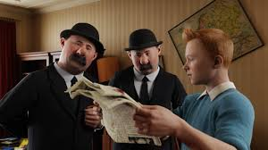
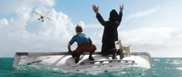
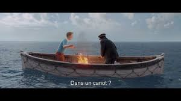
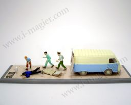
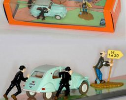
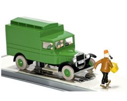
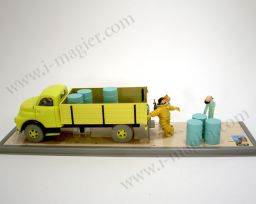
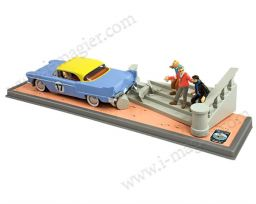
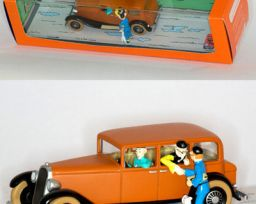

- Première sortie : 23 décembre 2011 (États-Unis)
- Réalisateur : Steven Spielberg
- Adaptations de : Le Trésor de Rackham le Rouge, L'Étoile mystérieuse, Le Secret de La Licorne, Le Crabe aux pinces d'or
- Scénario : Edgar Wright, Steven Moffat, Joe Cornish
- Producteurs : Steven Spielberg, Peter Jackson, Kathleen Kennedy
La Fiche du Film
Synopsis
Après avoir fait connaissance avec le capitaine Haddock à bord d'un cargo, Tintin enquête sur un navire dont le commandant de bord n'est autre qu'un ancêtre de ce dernier. Trois maquettes, dont l'une a été achetée par le reporter dans un vide-grenier, contiennent un parchemin dont le contenu révèle l’existence d'un trésor enfoui avec l'épave de ce bateau. En compagnie de Milou et des Dupondt, ils décident de partir à la recherche de ce précieux trésor appartenant au pirate Rackham le Rouge.
Développement :
Le projet est né dans les années 1980, à l'époque des Aventuriers de l'arche perdue où Steven Spielberg découvrit en novembre 1982 une critique d'un journaliste qui avait comparé Indiana Jones à Tintin. Ce personnage lui était tellement inconnu qu'il s'était renseigné sur ce personnage en lisant la collection d'Hergé avec qui il était « entré en contact en 1983, nous devions nous rencontrer mais il est mort subitement quelques jours avant. C'était il y a presque trente ans… ». Il rencontra alors, à l'enterrement, Fanny Rémi, l'épouse du feu dessinateur, qui entamera les droits d'adaptation, car, de son vivant, son mari l'avait considéré comme le meilleur réalisateur possible pour adapter ses œuvres à l'écran.
Fiche technique :
- Titre original : The Adventures of Tintin: Secret of the Unicorn
- Titre : Les Aventures de Tintin : Le Secret de la Licorne
- Réalisation : Steven Spielberg
- Scénario : Steven Moffat, Joe Cornish et Edgar Wright d'après l'œuvre de Hergé
- Direction artistique : Andrew L. Jones et Jeff Wisniewski
- Costumes : Lesley Burkes-Harding
- Photographie : Janusz Kamiński
- Effets visuels : Weta Digital
- Montage : Michael Kahn et Jabez Olssen
- Musique : John Williams
- Production : Steven Spielberg, Peter Jackson et Kathleen Kennedy
- Sociétés de production : Amblin Entertainment, The Kennedy/Marshall et WingNut Films
- Budget : 135 millions de dollars
- Langue originale : anglais
Musique :
John Williams, collaborateur attitré de Steven Spielberg depuis Sugarland Express, a composé la bande originale du film[18] qui sortira le 24 octobre 2011 de chez Sony Classical[19].
No Titre Durée
- The Adventures of Tintin 3:04
- Snowy’s Theme 2:10
- The Secret of the Scrolls 3:13
- Introducing the Thompsons and Snowy’s Chase 4:08
- Marlinspike Hall 3:59
- Escape from the Karaboudjan 3:21
- Sir Francis and the Unicorn 5:05
- Captain Haddock Takes the Oars 2:17
- Red Rackham’s Curse and the Treasure 6:10
- Capturing Mr. Silk 2:58
- The Flight to Bagghar 3:33
- The Milanese Nightingale 1:30
- Presenting Bianca Castafiore 3:28
- The Pursuit of the Falcon 5:43
- The Captain’s Counsel 2:10
- The Clash of the Cranes 3:48
- The Return to Marlinspike Hall and Finale 5:51
- The Adventure Continues 2:58
65:26
Acteurs :
Les voitures prensentent dans le film :
| Collection en voiture tintin : les 6 modèles | |||
|---|---|---|---|
| Caracteristiques des modeles | |||
| Héros | Tintin |  |  |
| Auteur | Hérgé | ||
| Dessinateur | Hérgé | ||
| Editeur | Hérgé / Moulinsart | ||
| Année | 2008 | ||
| Tirage | 10 000 ex. | ||
| Ambulance Tintin "on a marché sur la lune" | Voiture Citroen Dupondt | ||
|  |  |  |  |
| Fourgon cellulaire Tintin | Camion jaune Tintin "Objectif Lune" | Tintin Cadillac Eldorado | Voiture de Wang Jen-ghie |
| 2 camions | 4 voitures | ||